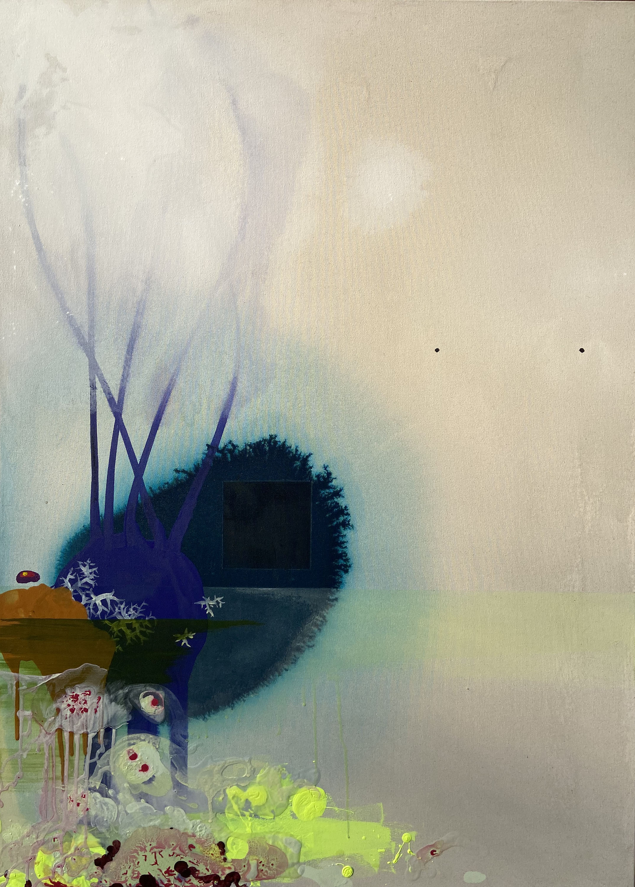

Untitled Study for Library Field, 2023, acrylic and mixed media on canvas, 38in x 52in
Ecosystems can be real or imagined, landscapes can be viewed or dreamt. Consider the interactions between the organisms crawling through the muck in a pond. Do you understand them? You could study them, and perhaps learn a little about how they interact with one another. But what do you really know about them?